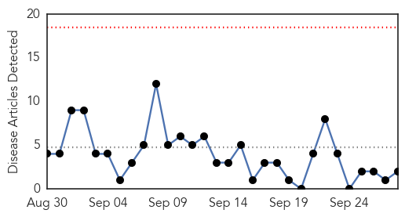
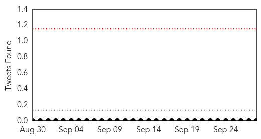
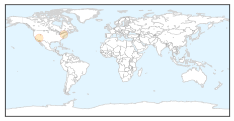
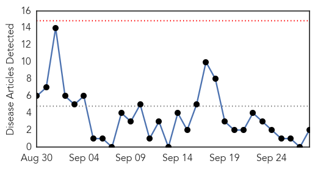
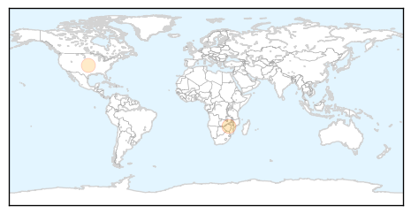
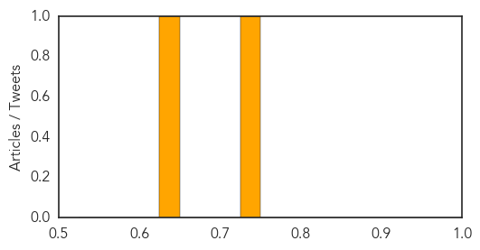

MERS
30-Day Web Trend
0 alerts, 0 warnings

30-Day Twitter Trend
0 alerts, 0 warnings

Article Locations
Article Confidences

Top Articles:
Top Tweets:
- 0.743
- AFD Blog `@WHO MERS Update – Saudi Arabia, Sept 27th' MERS-CoV http://t.co/JJVHkaJhxk
- 0.666
- AFD Blog `Saudi MOH Reports No New MERS Cases' MERS-CoV http://t.co/SPy7JkCwmR
Measles
30-Day Web Trend
0 alerts, 0 warnings

30-Day Twitter Trend
0 alerts, 0 warnings

Article Locations
Article Confidences
Top Articles:
Top Tweets:
-
No tweets found for Sep 28, 2015